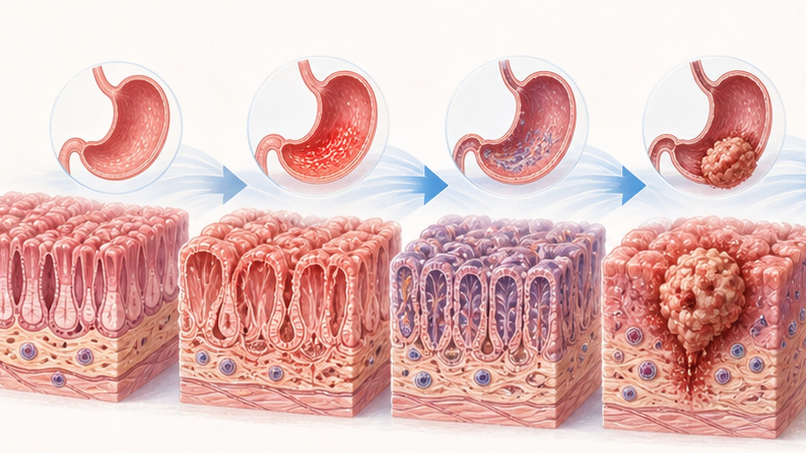
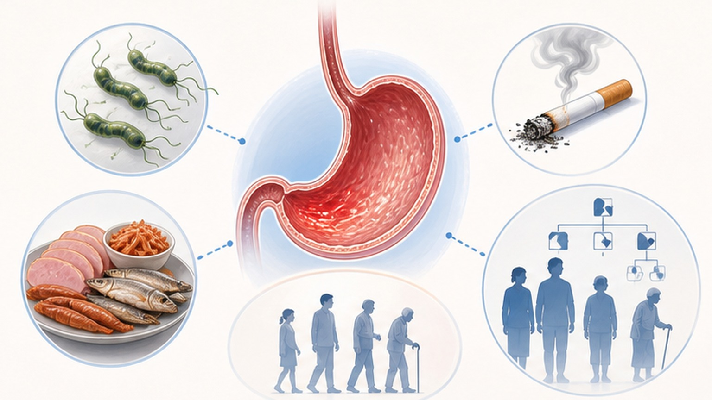
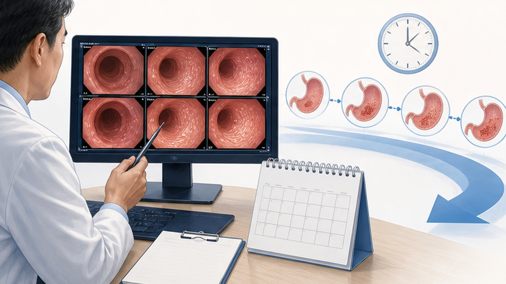
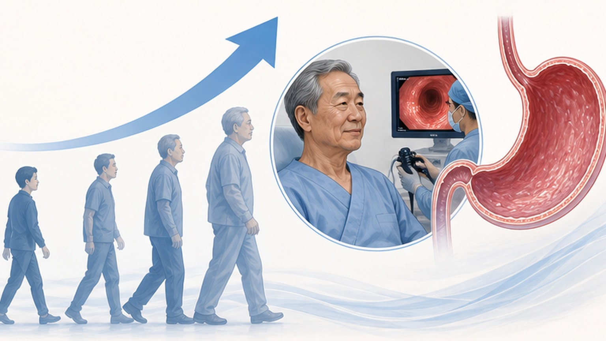

흔한 변화이고, 관리하면 위암을 일찍 찾거나 늦출 수 있습니다
오래된 염증으로 생기는 느린 변화입니다

대부분은 중간 단계에서 멈춥니다 — 위암까지 가는 분은 일부입니다
위축이 위의 아래쪽에만 있는지, 위 몸통까지 넓게 퍼졌는지를 적은 표시입니다
| 결과지 표시 | 위축이 있는 곳 | 의미 |
|---|---|---|
| C-1 · C-2 · C-3 (좁은 위축) | 위의 아래쪽(출구 쪽)에 머뭅니다. 숫자가 클수록 조금 더 위로 올라온 것입니다. | 비교적 가벼운 단계 — 정기 내시경으로 지켜봅니다. |
| O-1 · O-2 · O-3 (넓은 위축) | 위의 몸통까지 퍼졌습니다. O-3은 위 전체에 가깝게 넓습니다. | 위암 위험이 더 높아 내시경 간격을 짧게 잡습니다. |
바꿀 수 있는 요인을 찾아 줄이는 것이 관리의 핵심입니다

위축성위염·장상피화생은 제균을 권하는 경우에 들어갑니다
위축의 범위·장상피화생·가족력에 따라 담당 의사가 정합니다
| 이런 경우 | 내시경 간격 |
|---|---|
| 처음 진단받을 때 | 위축 범위를 보고, 헬리코박터균 검사와 조직검사를 함께 합니다. |
| 좁은 위축성위염 | 보통 2년마다 — 국가 위암검진 간격보다 길게 두지 않습니다. |
| 넓은 위축 · 장상피화생이 넓음 · 위암 가족력 | 1~2년마다로 간격을 좁힙니다. |
| 심한 세포 이상(고도 이형성)·조기 위암이 의심되면 | 바로 내시경 절제 등 치료를 상의합니다. |

되돌리는 음식은 없지만, 진행 속도와 위암 위험은 줄일 수 있습니다
정해진 내시경 날짜를 기다리지 않아도 됩니다
제균 · 생활 관리 · 정기 내시경 — 함께 지켜 가겠습니다

QR을 스캔하면 같은 자료를 휴대폰에서 다시 열 수 있습니다